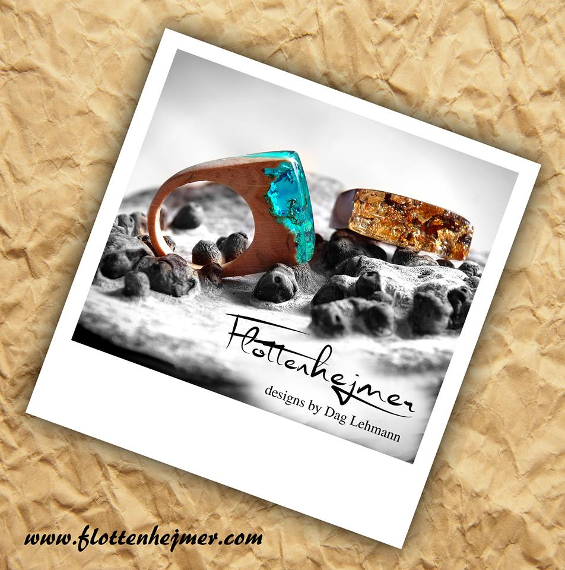
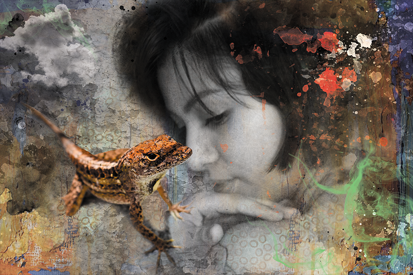

Ringene
 Alle ringene hos flottenhejmer er lavet helt specielt til hver en kunde. Alle ringene er håndlavet helt efter kundens ønske.
Ringene er lavet af forskelligt træ og smykke harpiks. Dette betyder også at det tager mellem 2 og 4 uger at lave en ring fra start til slut.
Billederne
 Billederne fra Flottenhejmer er baseret på minder og dyr. Det er motiver der står mig nært og som har stor betydning for mig.
Billederne er printet på det bedste lærred man kan finde, og kan fås i forskellige størrelser.